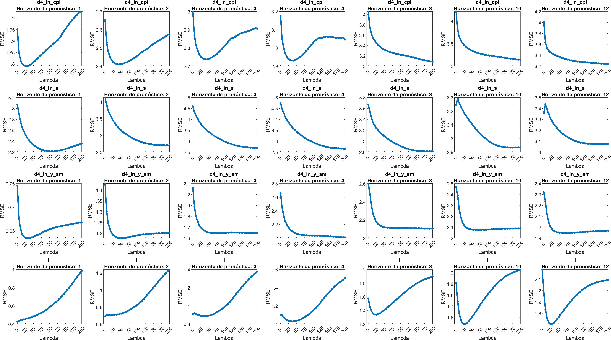
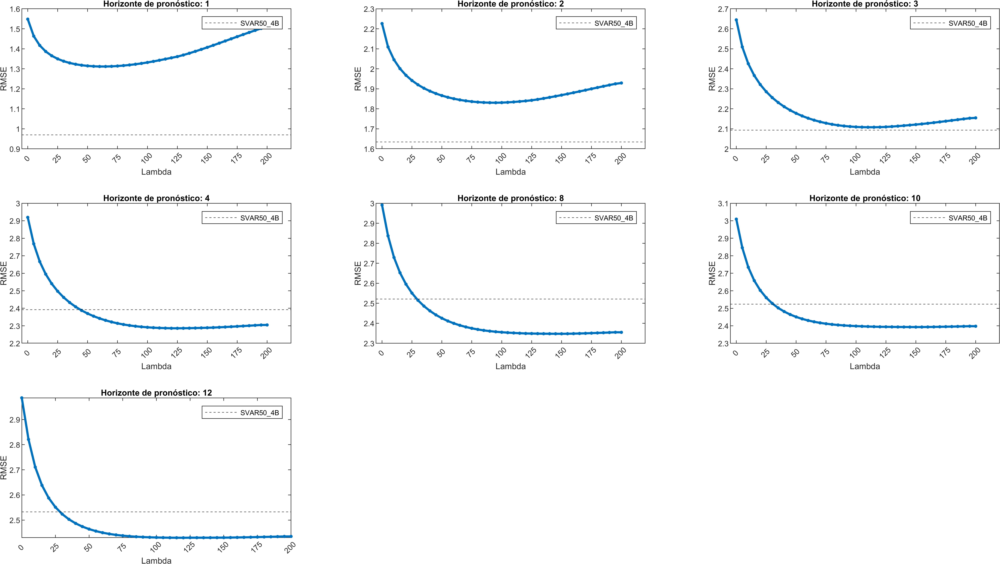

El objetivo de este documento es presentar un nuevo modelo (SVAR53), principalmente con una estimación diferente a la utilizada en el SVAR50-4B. En el SVAR53 se utiliza la estimación de Ridge con restricción. Además las restricciones de este nuevo modelo son diferentes.
Sin embargo las especificaciones generales para ambos modelos (SVAR53 y SVAR50-4B) son que, la realización de la evaluación es fuera de muestra. Las fechas con las que se modeló van desde 2005Q1 hasta 2024Q4.
Para estimar una regressión de Ridge con restricción se debe seguir el siguiente procedimiento:
Seleccionar los parámetros restringidos \(B\) en la forma compacta \(Y = BZ + U\)
Formar la matriz \(R\) y el vector \(r\) en la forma vectorizada \(\beta = R\gamma + r\) que dependen del vector no restringido \(\gamma\).
De los parámetros libres, formar la matriz \(Q\) para seleccionar (o darles un peso) las entradas para regularizar en el vector \(\gamma\).
Escoger el valor de \(\lambda\) para la penalización. El parámetro \(\lambda\) representa el peso que tiene la penalización.
Si \(\lambda\) es muy grande implica que el modelo se optimizará el modelo penalizando más los coeficientes, encogiéndolos y así disminuyendo la varianza. Si \(\lambda\) es cero, se obtiene una función de mínimos cuadrados ordinaria.
A medida que \(\lambda\) aumenta, el sesgo del modelo aumenta, mientras que la varianza disminuye. Así, la idea es balancear la varianza y el sesgo de forma óptima para que el RMSE disminuya para algún peso de regularización \(\lambda > 0\).
Como \(\Sigma_{u}^{-1}\) es desconocida, se puede usar el mismo procedimiento iterado GLS.
Ambos modelos cuentan con las siguientes variables endógenas y con el mismo ordenamiento:
d4_ln_y_stard4_ln_ipeii_stard4_ln_cpi_nosubd4_ln_yd4_ln_cpi_subd4_ln_sd4_ln_bmid4_ln_yd4_ln_cpi_subd4_ln_siEl modelo SVAR50-4B se estima con GLS y la matriz de restricciones para este modelo es \[ \begin{pmatrix} NaN& NaN&0 & 0& 0& 0& 0& 0& 0& 0\\ NaN& 0& NaN& 0& 0& 0& 0& 0& 0& 0\\ NaN& 0& 0& NaN& 0& 0& 0& 0& 0& 0\\ NaN& 0& 0& 0& NaN& 0& 0& 0& NaN& 0\\ NaN& 0& 0& 0& 0& NaN& 0& 0& NaN& 0\\ NaN& 0& NaN& 0& 0& 0& 0.9& 0& NaN& 0\\ NaN& 0& 0& 0& 0& 0& 0& NaN& NaN& NaN\\ NaN& 0& 0& 0& NaN& 0& 0& 0& NaN& NaN\\ NaN& 0& 0& NaN& NaN& 0& NaN& 0& NaN& NaN\\ \end{pmatrix} \]
donde \(NaN\) son los parámetros libres que se estiman.
Mientras que para el SVAR53 la matriz de restricción es la siguiente, en donde se decidió respetar los ceros de las primeras 3 filas y últimas 6 columnas porque son los que corresponden a los coeficientes de las variables domésticas para modelar el comportamiento de las variables de Estados Unidos.
\[ \begin{pmatrix} NaN& NaN&NaN & NaN& 0& 0& 0& 0& 0& 0\\ NaN& NaN& NaN& NaN& 0& 0& 0& 0& 0& 0\\ NaN& NaN& NaN& NaN& 0& 0& 0& 0& 0& 0\\ NaN& NaN& NaN& NaN& NaN& NaN& NaN& NaN& NaN& NaN\\ NaN& NaN& NaN& NaN& NaN& NaN& NaN& NaN& NaN& NaN\\ NaN& NaN& NaN& NaN& NaN& NaN& NaN& NaN& NaN& NaN\\ NaN& NaN& NaN& NaN& NaN& NaN& NaN& NaN& NaN& NaN\\ NaN& NaN& NaN& NaN& NaN& NaN& NaN& NaN& NaN& NaN\\ NaN& NaN& NaN& NaN& NaN& NaN& NaN& NaN& NaN& NaN\\ \end{pmatrix}. \qquad(2)\]
Debido a que los coeficientes, que se quieren regularizar en este modelo, son todos excpeto la primera columna (constantes). En este caso, todos tendrán el mismo peso. Por lo tanto, para obtener la matriz \(Q\) apropiada de la ecuación 1, se debe ralizar lo siguiente. A la matriz que tiene 1 en todas las entradas, excepto en la primera columna donde tiene ceros, llamada “matriz de regularización”, se le aplica una máscara lógica dada por la ecuación 2. Así se obtiene los elementos de la matriz de regularización. Así la matriz Q, debe ser la matriz diagonal, en la que cada entrada en la diagonal son los elementos obtenidos al aplicar la máscara a la matriz de regularización.
Ahora para escoger un \(\lambda\) óptimo se deber realizar una calibración. En este ejercicio se hace la estimación con 41 \(\lambda\)’s (múltiplos de 5 de 0 a 200), con el fin de obtener un \(\lambda\) óptimo.
La función que se anliza para buscar el \(\lambda\) es el RMSE de las variables objetivo y el promedio de los RMSE de las variables objetivo.
Al analizar individualmente las variables objetivo, se puede observar que la inflación y la tasa pueden tener una \(\lambda\) óptima relativamente pequeña. Mientras que el tipo de cambio pareciera indicar que el \(\lambda\) óptimo es muy grande indicando que los coeficientes que modelan esta variable deben representar un modelo AR(1).
Figura 1: RMSE de las variables objetivo vrs \(\lambda\)’s, en diferentes horizontes de pronóstico
Sin embargo, los valores del RMSE de las variables objetivo y el promedio correspondientes al SVAR50-4B, se presentan en la siguiente tabla
| Periodos | Inflación | Tipo de cambio | Crecimiento doméstico | Tasa | Promedio |
|---|---|---|---|---|---|
| 1 | 1.248 | 1.7118 | 0.58475 | 0.33552 | 0.97001 |
| 2 | 2.0206 | 2.8192 | 1.074 | 0.62348 | 1.6343 |
| 3 | 2.5448 | 3.4519 | 1.5001 | 0.87575 | 2.0931 |
| 4 | 2.8783 | 3.7489 | 1.8558 | 1.0863 | 2.3923 |
| 8 | 2.9947 | 3.8208 | 1.898 | 1.2338 | 2.4868 |
| 10 | 3.0304 | 3.7686 | 1.9233 | 1.3215 | 2.511 |
| 12 | 3.0812 | 3.6594 | 1.9654 | 1.3679 | 2.5185 |
Observando los valores de la tabla y los mínimos del RMSE en la inflación y la tasa de interés en la Figura 1 se ve que el SVAR50-4B sigue teniendo un menor error de pronóstico.
Figura 2: RMSE promedio de las variables objetivo vrs \(\lambda\)’s, en diferentes horizontes de pronóstico
En los primeros horizontes, es claro que \(\lambda\) tiene un óptimo en el mínimo de cada una de las gráficas, sin embargo para horizontes más grandes el óptimo no se observa claramente.
Se obtuvieron resultados mixtos, sin embargo es posible escoger un \(\lambda\) óptimo utilizando los resultados de dos de las variables objetivo. Este resultado puede compararse con el RMSE del SVAR50-4B y comprobar que el error del SVAR50-4B sigue estando mejor que el del SVAR53 incluso, con un \(\lambda\) calibrado.
Para el promedio de las variables, el SVAR50-4B tiene un RMSE menor para los primeros horizontes, pero para horizontes mayores el RMSE del SVAR53 podría ser menor con un lambda lo suficientemente calibrado.
La información más importante, revelada con estos resultados es que algunas variables tendrán pesos de regularización muy altos lo que podría indicar que habría una justificación para que algunos de los coeficientes en la matriz de restricción podrían ser cero, enfoncándose en mejorar el pronóstico.